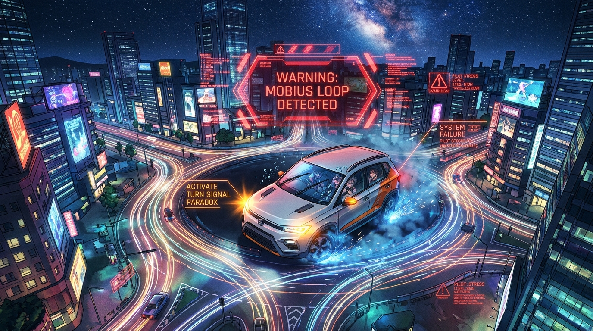

SSR 三寶
特級移動路障 // 晴天雨刷宗師
SBO-8888
林小葵 (Aoi)
巨型休旅裝甲坦克・視野盲區 85%
「我方向燈都打了 3 公里，是後面的車自己不讓我的！」
🧠 即時腦內OS
「救命啊！這個圓環怎麼出不去！我已經看到同一間超商四次了！」
THREAT TELEMETRY // 威脅遙測
LV.4 圓環迷航中
波及暴風半徑
1.50 km
與您直線距離
1.76 km
當前生還機率
54.2%
SURVIVAL PROBABILITY // 親友保桿完好率
即時衛星精算

NERV // 戰術情報本部
全體觀測員一級戒備中！
「報告指揮官！目標打左轉燈已經超過 3.8 公里，完全無法預測下一步動作！」
⚡ 四段三寶戰術情境切換器 (SCENARIO OVERRIDE)
📡 衛星即時戰術避險雷達圖 (點擊地圖任意位置可瞬移座標)
內圈緋紅：絕對淨空區 (保桿粉碎圈)
外圈琥珀：方向燈欺敵波及圈
青色護盾：您的避難位置
🌪️ 三寶混沌指數滑桿 (CHAOS INDEX)
76%
0% 乖巧停路邊
50% 左右不分
100% 無差別鬼切魔王
🎮 好市多三寶視角倒車挑戰
🎛️ OBD-II 座艙迷惑行為遙測
☀️ 大晴天無雲 // 雨刷超頻乾刷 MAX
⬅️ 左方向燈 (常駐)
右方向燈 (裝飾) ➡️
☀️ 室外天氣：萬里無雲・紫外線指數 9
左轉燈狂閃 ➔ 車頭卻向右偏 +28°
瞬時時速 vs 速限
16 / 60 km/h
內線超低速霸佔中
後照鏡使用率
0.00%
純車體對稱配重裝飾
煞車與油門混淆率
68%
隨時準備把油門當煞車
導航語音崩潰重算
34 次
「請在前方…算了隨便你」
🎙️ 座艙黑盒子即時語音轉譯牆
REC
TACTICAL ROUTE ORACLE
🧭 親友出門吉凶與迴避路徑精算機
輸入您的出發地、目的地與移動方式，AI 將交叉比對三寶當前暴風圈，算出您的生還吉凶！
AI TACTICAL ASSESSMENT // 戰術吉凶判定
【大凶 // 諸事不宜・建議就地臥倒】
正面遭遇三寶機率
94.5%
📏 建議最小安全車距
至少隔開 3 個紅綠燈（約 1.8 公里以上）或跨區繞道
👁️ 最大威脅視覺盲點
目標車牌 SBO-8888 的 A柱、B柱、C柱及整個後照鏡（死角達 85%）
🛡️ 推薦出門保命裝備
全罩式安全帽 + 第三人超額責任險 3000 萬 + 雙鏡頭 4K 行車紀錄器 + 護身符
警告！您的目的地與三寶暴風圈高度重疊！若看到前方車輛晴天刷雨刷，請立即放棄原定行程改搭捷運！
📢 親友 LINE 群組一鍵逃難通報產生器
自動帶入朋友姓名、車牌與當前波及半徑，一鍵複製貼進群組救人一命！
DRIVER HEXAGON ANALYTICS
📊 目標駕駛六維戰力分析雷達圖
以國防級量化指標拆解「為什麼他開車總讓人心跳加速」
單格路邊停車平均耗時
18分 42秒
最後還是放棄去停收費場
大晴天刷雨刷累計次數
1,428 次
雨刷膠條比輪胎還早磨平
方向燈連續不關最高紀錄
14.6 公里
從台中一路閃到彰化
副駕抓緊車門把手頻率
99.8%
把手已被捏出指紋凹槽